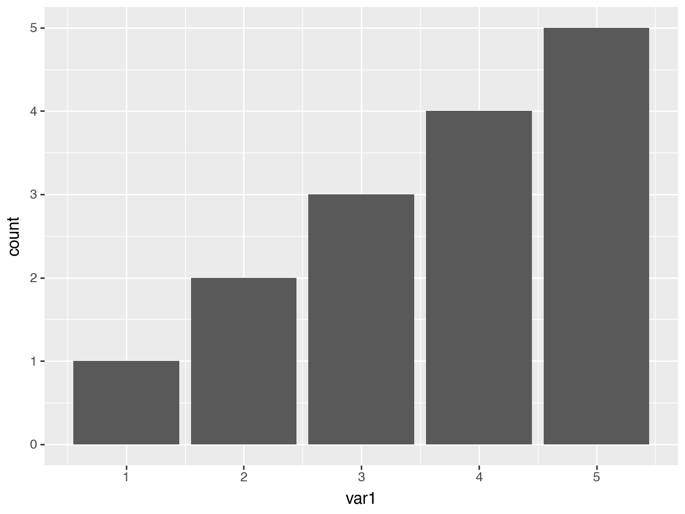
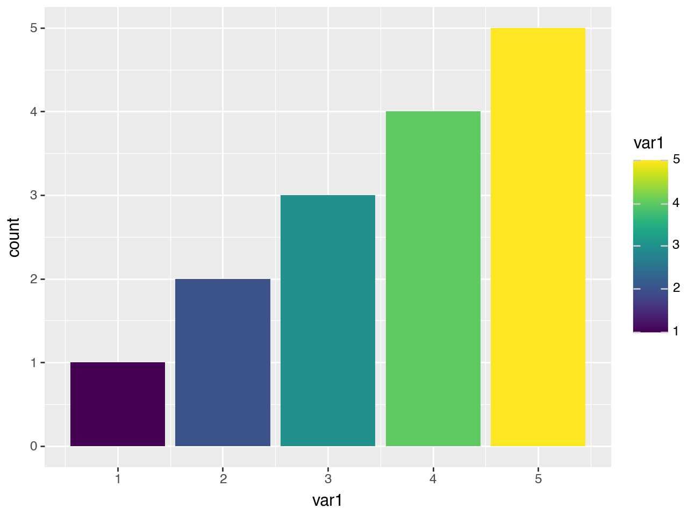

import pandas as pd
from plotnine import ggplot, aes, after_stat, geom_bar, labsafter_stat
geom_bar uses stat_count which by default maps the y aesthetic to the count which is the number of observations at a position.
df = pd.DataFrame({
"var1": [1, 2, 2, 3, 3, 3, 4, 4, 4, 4, 5, 5, 5, 5, 5]
})
(
ggplot(df, aes("var1"))
+ geom_bar()
)
Using the after_stat function, we can instead map to the prop which is the ratio of points in the panel at a position.
(
ggplot(df, aes("var1"))
+ geom_bar(aes(y=after_stat("prop"))) # default is after_stat('count')
)With after_stat you can used the variables calculated by the stat in expressions. For example we use the count to calculated the prop.
(
ggplot(df, aes("var1"))
+ geom_bar(aes(y=after_stat("count / np.sum(count)")))
+ labs(y="prop")
)--------------------------------------------------------------------------- NameError Traceback (most recent call last) File ~/scm/python/plotnine/plotnine/mapping/evaluation.py:223, in evaluate(aesthetics, data, env) 222 try: --> 223 new_val = env.eval(col, inner_namespace=data) 224 except Exception as e: File ~/scm/python/plotnine/plotnine/mapping/_env.py:69, in Environment.eval(self, expr, inner_namespace) 68 code = _compile_eval(expr) ---> 69 return eval( 70 code, {}, StackedLookup([inner_namespace] + self.namespaces) 71 ) File <string-expression>:1 NameError: name 'np' is not defined The above exception was the direct cause of the following exception: PlotnineError Traceback (most recent call last) File ~/.pyenv/versions/3.11.4/envs/plotnine/lib/python3.11/site-packages/IPython/core/formatters.py:922, in IPythonDisplayFormatter.__call__(self, obj) 920 method = get_real_method(obj, self.print_method) 921 if method is not None: --> 922 method() 923 return True File ~/scm/python/plotnine/plotnine/ggplot.py:141, in ggplot._ipython_display_(self) 134 def _ipython_display_(self): 135 """ 136 Display plot in the output of the cell 137 138 This method will always be called when a ggplot object is the 139 last in the cell. 140 """ --> 141 self._display() File ~/scm/python/plotnine/plotnine/ggplot.py:175, in ggplot._display(self) 172 save_format = "png" 174 buf = BytesIO() --> 175 self.save(buf, format=save_format, verbose=False) 176 display_func = get_display_function(format) 177 display_func(buf.getvalue()) File ~/scm/python/plotnine/plotnine/ggplot.py:661, in ggplot.save(self, filename, format, path, width, height, units, dpi, limitsize, verbose, **kwargs) 613 def save( 614 self, 615 filename: Optional[str | Path | BytesIO] = None, (...) 624 **kwargs: Any, 625 ): 626 """ 627 Save a ggplot object as an image file 628 (...) 659 Additional arguments to pass to matplotlib `savefig()`. 660 """ --> 661 sv = self.save_helper( 662 filename=filename, 663 format=format, 664 path=path, 665 width=width, 666 height=height, 667 units=units, 668 dpi=dpi, 669 limitsize=limitsize, 670 verbose=verbose, 671 **kwargs, 672 ) 673 sv.figure.savefig(**sv.kwargs) File ~/scm/python/plotnine/plotnine/ggplot.py:610, in ggplot.save_helper(self, filename, format, path, width, height, units, dpi, limitsize, verbose, **kwargs) 607 if dpi is not None: 608 self.theme = self.theme + theme(dpi=dpi) --> 610 figure = self.draw(show=False) 611 return mpl_save_view(figure, fig_kwargs) File ~/scm/python/plotnine/plotnine/ggplot.py:272, in ggplot.draw(self, show) 270 self = deepcopy(self) 271 with plot_context(self, show=show): --> 272 self._build() 274 # setup 275 self.figure, self.axs = self.facet.setup(self) File ~/scm/python/plotnine/plotnine/ggplot.py:375, in ggplot._build(self) 373 # Apply and map statistics 374 layers.compute_statistic(layout) --> 375 layers.map_statistic(self) 377 # Prepare data in geoms 378 # e.g. from y and width to ymin and ymax 379 layers.setup_data() File ~/scm/python/plotnine/plotnine/layer.py:471, in Layers.map_statistic(self, plot) 469 def map_statistic(self, plot: ggplot): 470 for l in self: --> 471 l.map_statistic(plot) File ~/scm/python/plotnine/plotnine/layer.py:302, in layer.map_statistic(self, plot) 297 # The statistics are calculated in transformed space, but 298 # we evaluate the mapping to them in data space. 299 # NOTE: If the inverse-retransform turn out to be slow 300 # we can try applying them to only the required columns. 301 data = plot.scales.inverse_df(self.data) --> 302 stat_data = evaluate(calculated, data, plot.environment) 304 # If there are duplicate columns, we use the computed 305 # ones in stat_data 306 columns = data.columns.difference(stat_data.columns) File ~/scm/python/plotnine/plotnine/mapping/evaluation.py:226, in evaluate(aesthetics, data, env) 224 except Exception as e: 225 msg = _TPL_EVAL_FAIL.format(ae, col, str(e)) --> 226 raise PlotnineError(msg) from e 228 try: 229 evaled[ae] = new_val PlotnineError: "Could not evaluate the 'y' mapping: 'count / np.sum(count)' (original error: name 'np' is not defined)"
--------------------------------------------------------------------------- NameError Traceback (most recent call last) File ~/scm/python/plotnine/plotnine/mapping/evaluation.py:223, in evaluate(aesthetics, data, env) 222 try: --> 223 new_val = env.eval(col, inner_namespace=data) 224 except Exception as e: File ~/scm/python/plotnine/plotnine/mapping/_env.py:69, in Environment.eval(self, expr, inner_namespace) 68 code = _compile_eval(expr) ---> 69 return eval( 70 code, {}, StackedLookup([inner_namespace] + self.namespaces) 71 ) File <string-expression>:1 NameError: name 'np' is not defined The above exception was the direct cause of the following exception: PlotnineError Traceback (most recent call last) File ~/.pyenv/versions/3.11.4/envs/plotnine/lib/python3.11/site-packages/IPython/core/formatters.py:708, in PlainTextFormatter.__call__(self, obj) 701 stream = StringIO() 702 printer = pretty.RepresentationPrinter(stream, self.verbose, 703 self.max_width, self.newline, 704 max_seq_length=self.max_seq_length, 705 singleton_pprinters=self.singleton_printers, 706 type_pprinters=self.type_printers, 707 deferred_pprinters=self.deferred_printers) --> 708 printer.pretty(obj) 709 printer.flush() 710 return stream.getvalue() File ~/.pyenv/versions/3.11.4/envs/plotnine/lib/python3.11/site-packages/IPython/lib/pretty.py:410, in RepresentationPrinter.pretty(self, obj) 407 return meth(obj, self, cycle) 408 if cls is not object \ 409 and callable(cls.__dict__.get('__repr__')): --> 410 return _repr_pprint(obj, self, cycle) 412 return _default_pprint(obj, self, cycle) 413 finally: File ~/.pyenv/versions/3.11.4/envs/plotnine/lib/python3.11/site-packages/IPython/lib/pretty.py:778, in _repr_pprint(obj, p, cycle) 776 """A pprint that just redirects to the normal repr function.""" 777 # Find newlines and replace them with p.break_() --> 778 output = repr(obj) 779 lines = output.splitlines() 780 with p.group(): File ~/scm/python/plotnine/plotnine/ggplot.py:131, in ggplot.__repr__(self) 125 msg = ( 126 "Using repr(plot) to draw and show the plot figure is " 127 "deprecated and will be removed in a future version. " 128 "Use plot.show()." 129 ) 130 warn(msg, category=FutureWarning, stacklevel=2) --> 131 self.show() 132 return f"<Figure Size: ({W} x {H})>" File ~/scm/python/plotnine/plotnine/ggplot.py:150, in ggplot.show(self) 143 def show(self): 144 """ 145 Show plot using the matplotlib backend set by the user 146 147 Users should prefer this method instead of printing or repring 148 the object. 149 """ --> 150 self._display() if is_inline_backend() else self.draw(show=True) File ~/scm/python/plotnine/plotnine/ggplot.py:175, in ggplot._display(self) 172 save_format = "png" 174 buf = BytesIO() --> 175 self.save(buf, format=save_format, verbose=False) 176 display_func = get_display_function(format) 177 display_func(buf.getvalue()) File ~/scm/python/plotnine/plotnine/ggplot.py:661, in ggplot.save(self, filename, format, path, width, height, units, dpi, limitsize, verbose, **kwargs) 613 def save( 614 self, 615 filename: Optional[str | Path | BytesIO] = None, (...) 624 **kwargs: Any, 625 ): 626 """ 627 Save a ggplot object as an image file 628 (...) 659 Additional arguments to pass to matplotlib `savefig()`. 660 """ --> 661 sv = self.save_helper( 662 filename=filename, 663 format=format, 664 path=path, 665 width=width, 666 height=height, 667 units=units, 668 dpi=dpi, 669 limitsize=limitsize, 670 verbose=verbose, 671 **kwargs, 672 ) 673 sv.figure.savefig(**sv.kwargs) File ~/scm/python/plotnine/plotnine/ggplot.py:610, in ggplot.save_helper(self, filename, format, path, width, height, units, dpi, limitsize, verbose, **kwargs) 607 if dpi is not None: 608 self.theme = self.theme + theme(dpi=dpi) --> 610 figure = self.draw(show=False) 611 return mpl_save_view(figure, fig_kwargs) File ~/scm/python/plotnine/plotnine/ggplot.py:272, in ggplot.draw(self, show) 270 self = deepcopy(self) 271 with plot_context(self, show=show): --> 272 self._build() 274 # setup 275 self.figure, self.axs = self.facet.setup(self) File ~/scm/python/plotnine/plotnine/ggplot.py:375, in ggplot._build(self) 373 # Apply and map statistics 374 layers.compute_statistic(layout) --> 375 layers.map_statistic(self) 377 # Prepare data in geoms 378 # e.g. from y and width to ymin and ymax 379 layers.setup_data() File ~/scm/python/plotnine/plotnine/layer.py:471, in Layers.map_statistic(self, plot) 469 def map_statistic(self, plot: ggplot): 470 for l in self: --> 471 l.map_statistic(plot) File ~/scm/python/plotnine/plotnine/layer.py:302, in layer.map_statistic(self, plot) 297 # The statistics are calculated in transformed space, but 298 # we evaluate the mapping to them in data space. 299 # NOTE: If the inverse-retransform turn out to be slow 300 # we can try applying them to only the required columns. 301 data = plot.scales.inverse_df(self.data) --> 302 stat_data = evaluate(calculated, data, plot.environment) 304 # If there are duplicate columns, we use the computed 305 # ones in stat_data 306 columns = data.columns.difference(stat_data.columns) File ~/scm/python/plotnine/plotnine/mapping/evaluation.py:226, in evaluate(aesthetics, data, env) 224 except Exception as e: 225 msg = _TPL_EVAL_FAIL.format(ae, col, str(e)) --> 226 raise PlotnineError(msg) from e 228 try: 229 evaled[ae] = new_val PlotnineError: "Could not evaluate the 'y' mapping: 'count / np.sum(count)' (original error: name 'np' is not defined)"
By default geom_bar uses stat_count to compute a frequency table with the x aesthetic as the key column. As a result, any mapping (other than the x aesthetic is lost) to a continuous variable is lost (if you have a classroom and you compute a frequency table of the gender, you lose any other information like height of students).
For example, below fill='var1' has no effect, but the var1 variable has not been lost it has been turned into x aesthetic.
(ggplot(df, aes("var1")) + geom_bar(aes(fill="var1")))
We use after_stat to map fill to the x aesthetic after it has been computed.
(
ggplot(df, aes("var1"))
+ geom_bar(aes(fill=after_stat("x")))
+ labs(fill="var1")
)